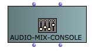

OpenMusic DocumentationHiérarchie de section : OM 6.6 User Manual > Audio > Audio Player
OpenMusic DocumentationHiérarchie de section : OM 6.6 User Manual > Audio > Audio Player
Navigation : page précédente | page suivante
Attention, votre navigateur ne supporte pas le javascript ou celui-ci à été désactivé. Certaines fonctionnalités de ce guide sont restreintes.
The Audio Player
OM currently relies on the LibAudioStream libray for playback and rendering of audio files. The LibAudioStream player offers a multitrack architecture, sounds can be assigned to different tracks with particular volume and panning values.
Multi-channel Support
OM sound objects support arbitrary number of channels for audio files, but the default OM player will only read mono and stereo files. In order to read multi-channel audio files, please refer to the "Alternative Players" section of this page.
The LibAudioStream Player
LibAudioStream
(c) GRAME : see http://libaudiostream.sourceforge.net/
Tracks
Every sound object can be assigned a particular audio track.
Setting Tracks to the Sound Objects
Sound rendering can then be controlled for the different track using the AUDIO-MIX-CONSOLE objects.
Sample Rate
The audio player has a single sample-rate (by default, 44100Hz). If you want to play files with a different sample rate, you need to change the default player sample rate. To do so, go to the OM preferences, Consequently, it is not possible to play several files at the same time with different sample rates. |
{kind=link}
Bad Sample-Rate
If you experiment audible slowdowns or accelerations at playing sounds, this may be because the sample rate of the player is not the same as the sample rate of your audio file.
The Audio-Mix-Console
AUDIO-MIX-CONSOLE is another OM object allowing to set and send control values for the OM audio player.
It can be instanciated as a standard OM object as a box.

By default, the Audio-Mix-Console has only one track. Set a different number to the second ( nbtracks ) input in order to instanciate it with another number of tracks. |

|
Double click on the bo to open the AUDIO-MIX-CONSOLE editor. This editor actually corresponds to a real console for the control of the OM audio player. |

|
Every time a parameter (volume, panning) is changed on the AUDIO-MIX-CONSOLE editor, it is immediately sent to the audio player and affects current or future audio playbacks.
Playing Controls
The Audio-Mix-Console can also be considered a "stadard" musical object, and played as such.
Press space to "play" the AUDIO-MIX-CONSOLE. All the control values for its different tracks will immediately be sent to the audio player.
The AUDIO-MIX-CONSOLE can also be used in a Maquette. At a given time (when the playing cursor reaches the Audio-Mix-Console box), this box will modify the values of the different audio player parameters.
Alternative Audio Players
Alternative audio players can be installed and registered in OM.
Currently this is the case for the MultiPlayer, a standalone application which communicates with OM and can render multi-channel audio as well as ambisonics-encoded files.
MultiPlayer
MultiPlayer by Marlon Scumacher, CIRMMT - McGill University
You can download the MultiPlayer (MacOSX only) at the following pages :
Ircam forum softwares : OpenMusic download pages.
OMPrisma pages at McGill/IDMIL : http://www.idmil.org/software/omprisma
Selecting the Player
There are two ways for changing the player.
|

|
Inside the sound editor, using the |

|
Launching the MultiPlayer
When the MultiPlayer is selected, it should be launched automatically (if the player application path has been set up correctly, see below). If not, it can be necessary to launch the application manually.
If a sound box does not play, it maight be that it is assifgned to a player which is not currently active...
MultiPlayer Setup
For optimal use, the MultiPlayer options might be set in the OM preferences, Audio tab.
Set the correct path to the MultiPlayer application if needed. Change the OSC communication ports if they have been changed in the MultiPlayer side. |

|
Note that default preference values should work with the default values of the MultiPlayer.
Références :
Plan :
Navigation : page précédente | page suivante
A propos...(c) Ircam - Centre Pompidou